All mobsAlle wezens
Mikas, bosses and the other mobs you meet in the Guhmension, the Guheinde and the Barbecuether.
Mika's, bazen en andere wezens die je in de Guhmensie, het Guheinde en de Barbecuether tegenkomt.
20 / 20
| NameNaam | KindSoort | AboutOver | |
|---|---|---|---|
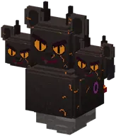 | Aangebrande Mika | BossBaas | Call him, in any dimension: a T of 4 ash blocks (or as aarde) with 3 verkoolde mikakoppen on top, standing or...Oproepen, in elke dimensie: een T van 4 asblokken (of asaarde) met 3 verkoolde mikakoppen erop, staand of aan... |
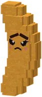 | Boze Kaasknabbel | MobWezen | An angry knabbel from the kaasknabbel-nest. Beaten, it is just zieli.Een boze knabbel uit het kaasknabbel-nest. Verslagen is hij gewoon zieli. |
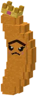 | Boze Oppernabbel | BossBaas | After the third wave: "De Boze Oppernabbel komt eraan! Hij is heel boos. Of...Na de derde golf: "De Boze Oppernabbel komt eraan! Hij is heel boos. Of... |
 | Grote Mika | BossBaas | The guardian of every challenging guh cave: a Mika two and a half times as big, waiting next to the treasure.De bewaker van elke uitdagende guhgrot: een Mika van tweeënhalf keer zo groot, naast de schat. |
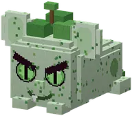 | Heg-Mika | Mika | A Mika in a hedge suit, with a leaf on its head. It only pinches knabbels: never damage.Een Mika in een heggenpakje, met een blaadje op zijn kop. Hij pikt alleen knabbels: nooit schade. |
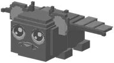 | Hongerige Enderguh | MobWezen | Hongerige Enderguh is een wezen uit Guhs. |
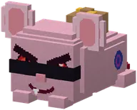 | Knabbeldief | Mika | The Heg-Mika (doolhof), the Mika-pikker (circuit) and the Knabbeldief (politie). They pinch, giggle and run.De Heg-Mika (doolhof), de Mika-pikker (circuit) en de Knabbeldief (politie). |
 | Knabbelkristal | MobWezen | Knabbelkristal is een wezen uit Guhs. |
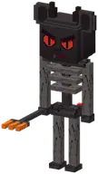 | Knekel-Mika | Mika | A tall, charred Mika skeleton with a hot grill fork: its stab sets you on fire for 2 seconds.Een lang, verkoold Mika-skelet met een hete grillvork: zijn steek zet je 2 seconden in brand. |
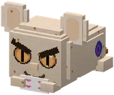 | Kruimel-Mika | Mika | On your way to the Burgemeester with the taart, the theeservies or the slingers, a Kruimel-Mika may snatch...Een kleine Mika vol koekkruimels. Vecht nooit, pikt alleen: feesttaarten, theeserviezen, slingers... |
| Mika | Mika | The evil guh: red slit eyes, angry brows, a fanged grin and a devil tail, with Mika above its head.De kwaadaardige guh: rode spleetogen, boze wenkbrauwen, een grijns met hoektand en een duivelsstaartje, met... |
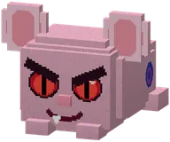 | Mika-baas | BossBaas | Mika-baas is een wezen uit Guhs. |
| Mika-larfje | Mika | Mika-larfje is een wezen uit Guhs. |
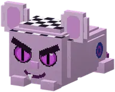 | Mika-pikker | Mika | Pinches your VAHOEG boost on the Guh-Circuit, giggles and pops back.Pikt je VAHOEG-zet in op het Guh-Circuit, giechelt en springt terug. |
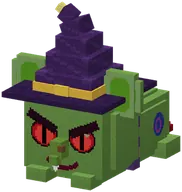 | Moerasheks-Mika | Mika | The witch of the Mikas: a green Mika with a big purple pointed hat (with a cheese-yellow band and a glowing...Een Mika met een punthoed. Gooit vadsverdrijvende drankjes (dan ben je even onvahoeg) en knabbelt haar eigen... |
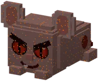 | Nether-Mika | Mika | Wear a piece of vahoege vads gear and Nether-Mikas leave you alone.Draag een stuk vahoege vads-uitrusting en Nether-Mika's laten je met rust. |
 | Opper-Mika | BossBaas | Opper-Mika (150 HP, a boss bar) rides the last big Enderguh, grey and thin because the Mikas never give it a...Opper-Mika (150 levens, een baasbalk) rijdt op de laatste grote Enderguh, grauw en mager omdat de Mika's hem... |
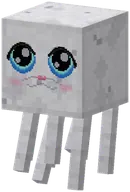 | Rookguh | MobWezen | The count of Rookguhs you saved used to sit above the whole Guhdex.Een zielig mager guhspookje van rook, verdwaald in de Barbecuether. |
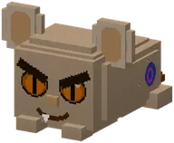 | Vadswaker | BossBaas | A giant Mika the colour of old cheese, with glowing cheese holes in his fur, huge dish ears and a sleeping...Een reuzenmika in de kleur van oude kaas, met gloeiende kaasgaatjes in zijn vacht, enorme schotelooren en een... |
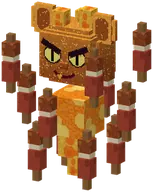 | Vonk-Mika | Mika | The blaze of the Mikas: floats and throws three glowing coals in a row.De blaze van de Mika's: zweeft en gooit drie gloeiende kooltjes achter elkaar. |